Automatic Transmission Disassembly 2 of 2
Center Support Component (Front Brake, Rear Brake, And Front One-Way Clutch) Disassembly / Assembly1. Carry out the preinspection before disassembly.
Center Support Clutch:
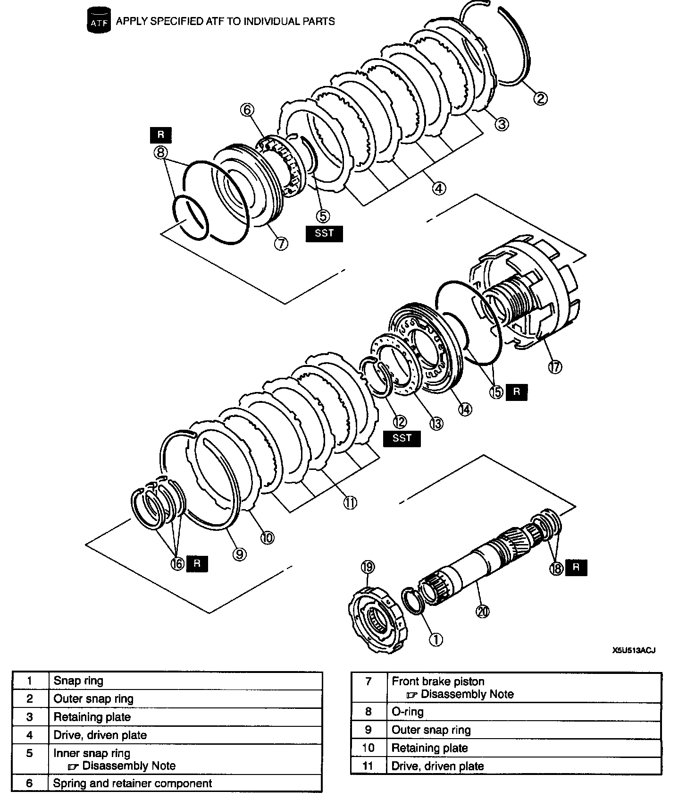
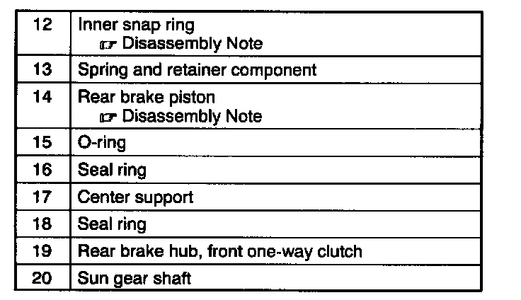
2. Disassemble in the order indicated in the table.
3. Assemble in the reverse order of disassembly.
Inner Snap Ring Disassembly Note
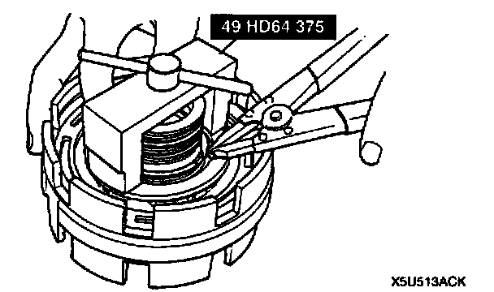
1. Install the SSTs.
Caution: Depress the piston return spring only enough to remove the snap ring. Overpressing will damage the retainer component edges.
2. Compress the piston return spring.
3. Remove the one end of the snap ring from the groove with snap ring pliers.
4. Remove the SSTs.
Front Brake Piston Disassembly Note
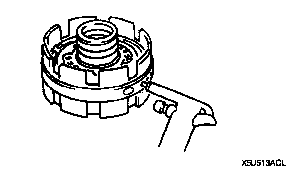
- Remove the front brake piston from the center support by applying compressed air through the fluid passage.
Air pressure 390 kPa (4.0 kgf/cm2, 57 psi) max.
Rear Brake Piston Disassembly Note
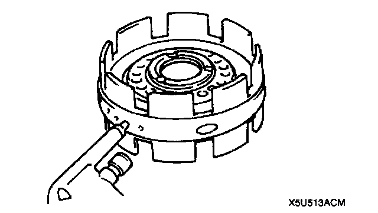
- Remove the rear brake piston from the center support by applying compressed air through the fluid passage.
Air pressure 390 kPa (4.0 kgf/cm2, 57 psi) max.
Assembly Procedure
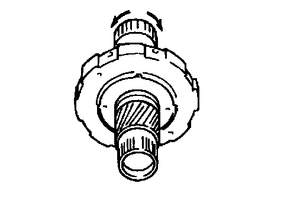
1. While holding the rear hub, verify that the sun gear shaft rotates smoothly when turned clockwise and locks when turned counterclockwise. If not as specified, replace the center support component.
2. Apply ATF to the new seal ring.
3. Install the seal ring to the sun gear shaft.
4. Install the one-way clutch component to the sun gearshaft.
5. Install the new seal ring to the center support.
6. Apply ATF to the new O-ring.
7. Install the O-ring to the front brake piston.
8. Install the front brake piston to the center support.
9. Install the spring and retainer component and snap ring to the center support.
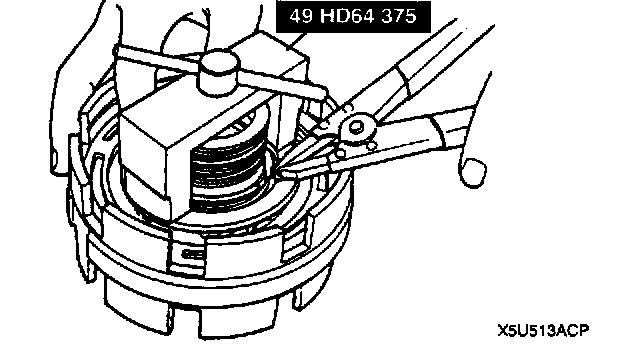
10. Install the SST.
Caution: Depress the piston return spring only enough to install the snap ring. Overpressing will damage the retainer component edges.
11. Compress the spring and retainer component.
12. Install the snap ring.
13. Remove the SSTs.
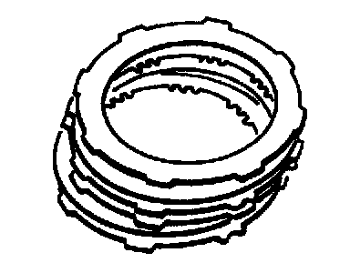
14. Install the drive and driven plates in the following order.
15. Install the retaining plate.
16. Install the snap ring.
17. Apply ATF to the new O-ring.
18. Install the O-ring to the rear brake piston.
19. Install the rear brake piston to the center support.
20. Install the spring and retainer component and snap ring.
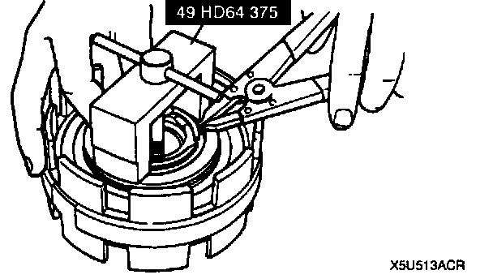
21. Install the SSTs.
Caution: Depress the piston return spring only enough to Install the snap ring. Overpressing will damage the retainer component edges.
22. Compress the spring retainer component.
23. Install the snap ring.
24. Remove the SSTs.
25. Install the drive and driven plates.
26. Install the retaining plate.
27. Install the snap ring.
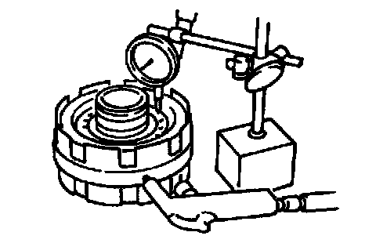
28. Using a dial indicator, measure the front clutch piston stroke applying and releasing the compressed air as shown.
Air pressure 390 kPa (4.0 kgf/cm2, 57 psi) max.
Piston stroke 0.78 - 1.32 mm (0.04 - 0.05 inch)
29. If not within specification, replace the drive plate.

30. Using a dial indicator, measure the rear brake piston stroke applying and releasing the compressed air as shown.
Air pressure 390 kPa (4.0 kgf/cm2,57 psi) max.
Piston stroke 1.03 - 1.65 mm (O.05 - 0.06 inch)
31. If not as specified, replace the drive plate.
32. Install the sun gear shaft to the center support.
33. Install the snap ring to the sun gear shaft.
Planetary Gear And Output Shaft (Rear One-Way Clutch And Low And Reverse Brake) Disassembly / Assembly)
1. Carry out the preinspection before disassembly.

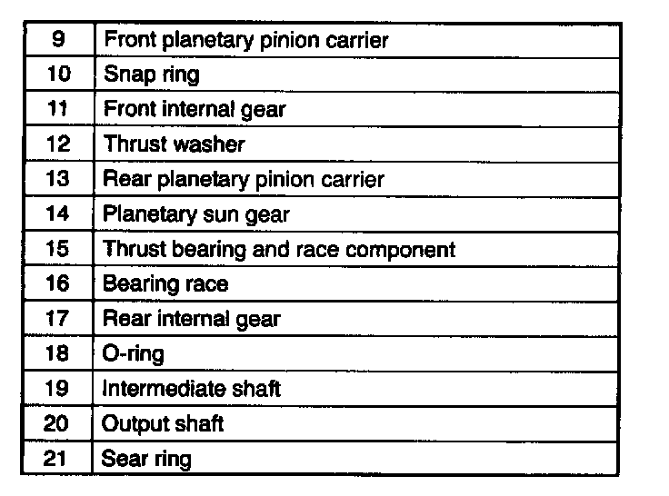
2. Disassemble in the order indicated in the table.
3. Assemble in the reverse order of disassembly.
Assembly Procedure
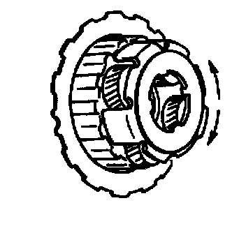
1. Install the reverse brake reaction plate to front planetary gear. With reverse brake reaction plate fixed stationary, turn front planetary gear clockwise to inspect that it locks and then counterclockwise to inspect that it turns smoothly.
2. Install the bearing race and rear internal gear to the intermediate shaft.
3. Install the snap ring.
4. Install the thrust bearing and rear component.
5. Install the rear planetary pinion carrier to the intermediate shaft.
6. Install the thrust washer to the rear planetary pinion carrier.
7. Install the seal ring to the output shaft.
8. Install the thrust bearing and race.
9. Install the intermediate shaft to the output shaft.
10. Install the snap ring to the front internal gear.
11. Install the front internal gear to the output shaft.
12. Install the thrust washer to the front planetary carrier.
13. Install the retainer and rear one-way clutch to the front carrier component.
14. Install the snap ring.
15. Install the inner race to the front carrier component.
16. Apply petroleum jelly to the rear thrust washer.
17. Install the thrust washer to the front carrier component.
18. Install the front carrier component to the front internal gear.
19. Install the drive and driven plates.
20. Install the retaining plate.
21. Install the inner race component to the rear one-way clutch.
Low And Reverse Brake Disassembly / Assembly
Low Reverse Clutch:

1. Disassemble in the order indicated in the table.
2. Assemble in the reverse order of disassembly.
Snap Ring Disassembly Note
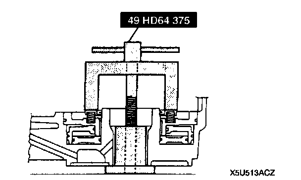
1. Install the SSTs.
Caution: Depress the piston return spring only enough to remove the snap ring. Overpressing will damage the retainer component edges.
2. Compress the piston return spring.
3. Remove one end of the snap ring from the groove with snap ring pliers.
Sleeve, Inner Piston Disassembly Note
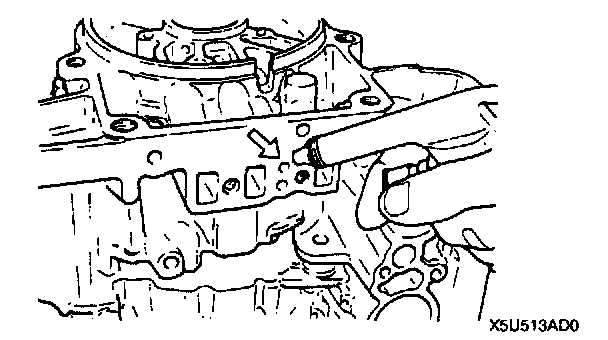
1. Remove the piston and sleeve from transmission case by applying compressed air through the fluid passage.
Air pressure 390 kPa (4.0 kgf/cm2, 57 psi) max.
2. Remove the outer piston and inner piston from the sleeve.
3. Remove the O-ring from the piston and sleeve.
Assembly Procedure
1. Apply ATF to the new O-ring.
2. Install the O-ring to the piston and sleeve.
3. Install the inner piston and outer piston to the sleeve.
4. Install the piston and sleeve to the transmission case.
5. Install the spring and retainer component and snap ring.
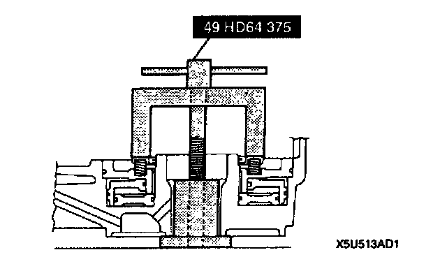
6. Install the SSTs.
Caution: Depress the piston return spring only enough to Install the snap ring. Overpressing will damage the retainer component edges.
7. Compress the spring retainer component.
8. Install the snap ring.
9. Remove the SSTs.
Control Valve Body Disassembly / Assembly
Control Valve Body Disassembly
Caution: Denting or scratching these components will reduce the ability of the transmission to shift properly. When handling these components or the valve body that contains them, be careful not to drop or hit them.
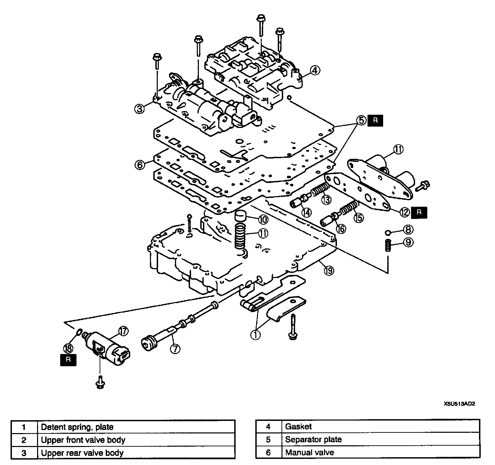
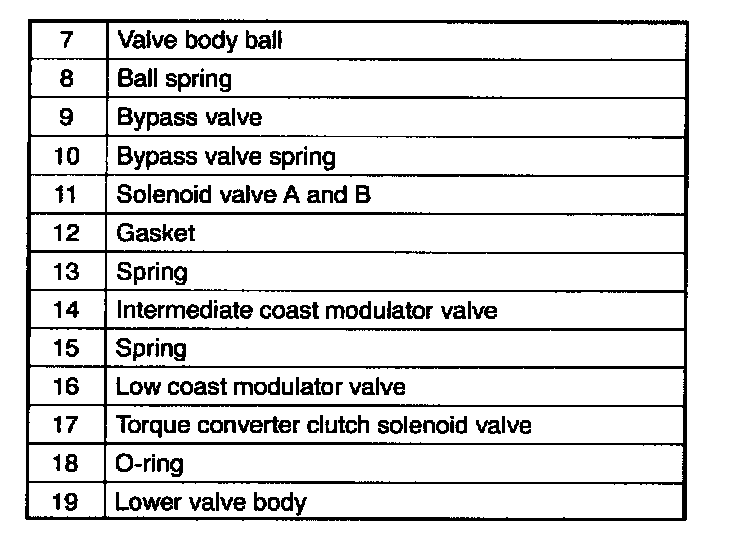
1. Disassemble in the order indicated in the table.
2. Neatly arrange the removed parts to avoid confusing the similar parts.
Warning: Using compressed air can cause dirt and other particles to fly out, causing Injury to the eyes. Wear protective eye wear whenever using compressed air.
3. Clean the removed parts with cleaning solvent, then use compressed air to dry them. Use compressed air to clean out all holes and passages.
Disassembly Procedure
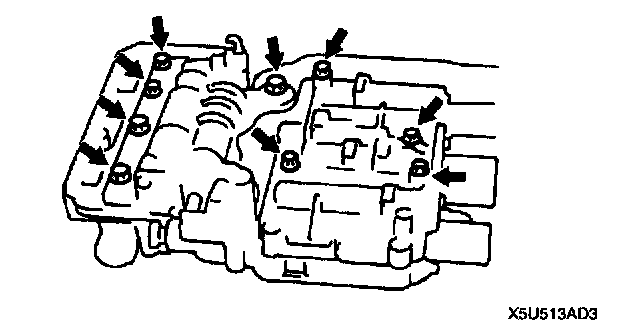
1. Remove the bolts from upper front valve body and upper rear valve body side.
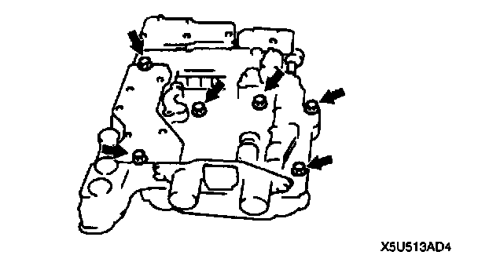
2. Remove the bolts from the lower valve body side.
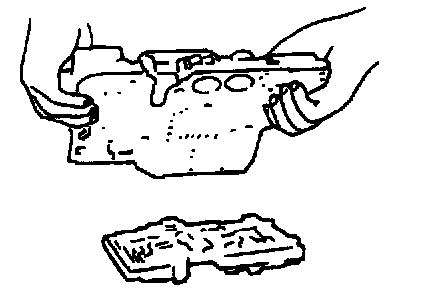
3. Separate upper front valve body, upper rear valve body, and lower valve body while pressing separator plate and valve body gasket against lower valve body to prevent balls, spring and others from coming out of valve body.
4. Remove the solenoid valve A, B, and, gasket.
5. Remove the spring and intermediate coast modulator valve.
6. Remove the spring and low coast modulator valve.
7. Remove the torque converter clutch solenoid valve.
Upper Front Valve Body Disassembly / Assembly
Caution: Denting or scratching these precisely machined components will reduce the ability of the transmission to shift properly. When handling these components or the valve body that contains them, be careful not to drop or hit them.
Note: If a valve does not slide out under its own weight, place the valve body open side down and tap on the valve body lightly with a plastic hammer.
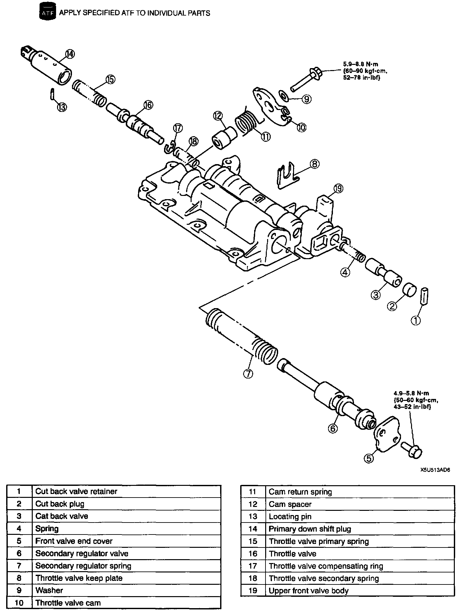
1. Disassemble in the order indicated in the table.
Warning: Using compressed air can causing dirt and other particles to fly out, causing Injury to the eyes. Wear protective eye wear whenever using compressed air.
2. Clean all parts and holes by using compressed air and apply ATF to them immediately before assembly.
3. Assemble in the reverse order of disassembly.
Assembly Procedure
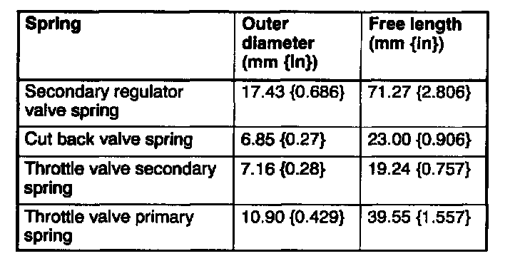
1. Measure the spring free length.
2. If not within the specification, replace the control valve body component.
3. Install the throttle valve.
4. Install the throttle valve keep plate.
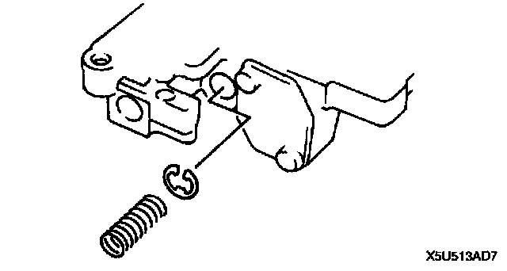
5. Install the throttle valve compensating ring and secondary valve spring.
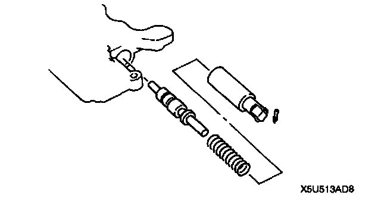
6. Install the throttle valve primary spring and shift down plug.
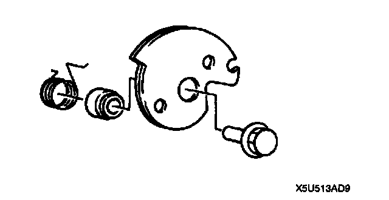
7. Install the throttle valve cam.
8. Install the throttle valve cam to the valve body.
Tightening torque 5.9 - 8.8 Nm (60 - 90 kgf-cm, 52 - 78 inch lbs.)
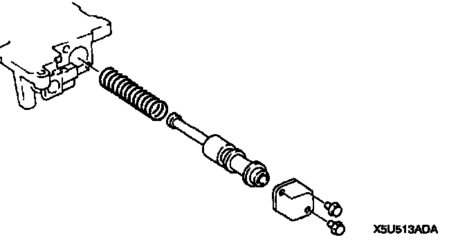
9. Install the secondary regulator spring, secondary regulator valve, and front valve end cover.
Tightening torque 4.9 - 5.8 Nm (50 - 60 kgf-cm, 43 - 52 inch lbs.)
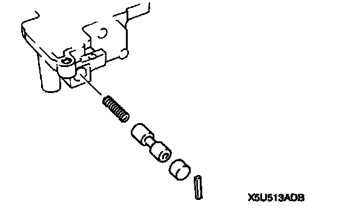
10. Install the spring, cutback valve, cut back plug, and cut back retainer.
Upper Rear Valve Body Disassembly / Assembly
Caution: Denting or scratching these precisely machined components will reduce the ability of the transmission to shift properly. When handling these components or the valve body that contains them, be careful not to drop or hit them.
Note: If a valve does not slide out under its own weight, place the valve body open side down and tap on the valve body lightly with a plastic hammer.
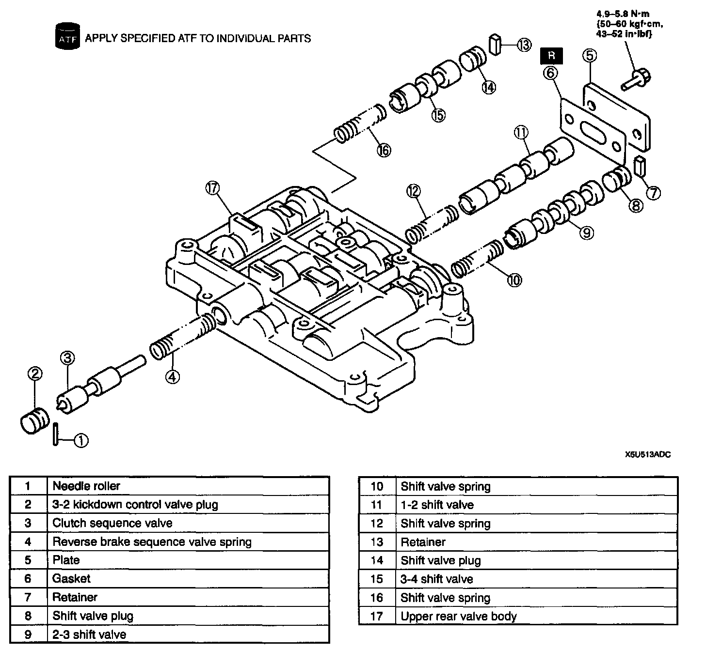
1. Disassemble in the order indicated in the table.
Warning: Using compressed air can cause dirt and other particles to fly out, causing injury to the eyes. Wear protective eye wear whenever using compressed air.
2. Clean all parts and holes by using compressed air and apply ATF to them immediately before assembly.
3. Assemble in the reverse order of disassembly.
Assembly Procedure
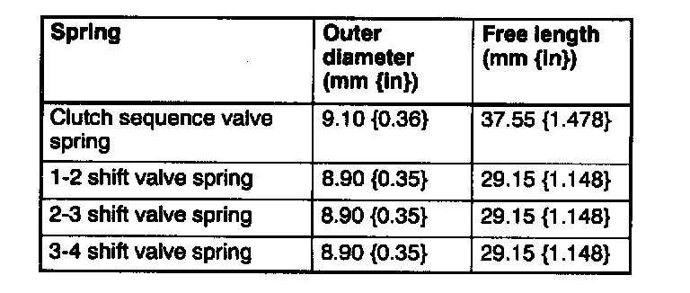
1. Measure the spring free length.
2. If not within the specification, replace the control valve body component.
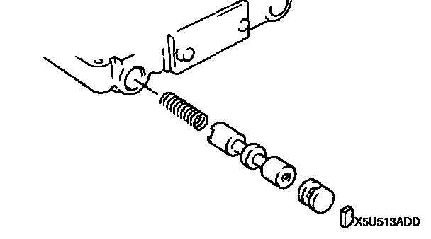
3. Install the shift valve spring, 3 - 4 shift valve, shift valve plug, and retainer.
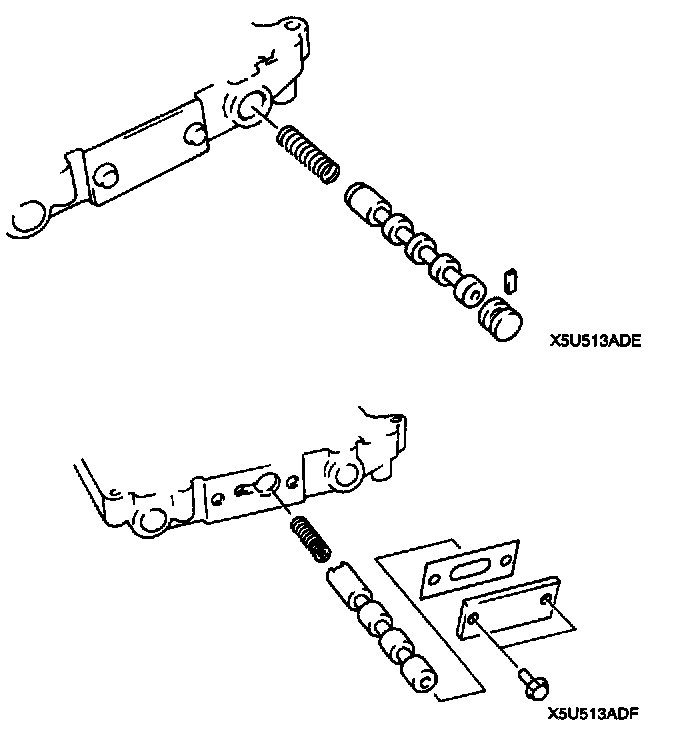
4. Install the shift valve spring, 1 - 2 shift valve, Shift valve spring, 2 - 3 shift valve, shift valve plug, and retainer.
5. Install the gasket and plate.
6. Tighten the bolt.
Tightening torque 4.9 - 5.8 Nm (50 - 60 kgf-cm, 43 - 52 inch lbs.)
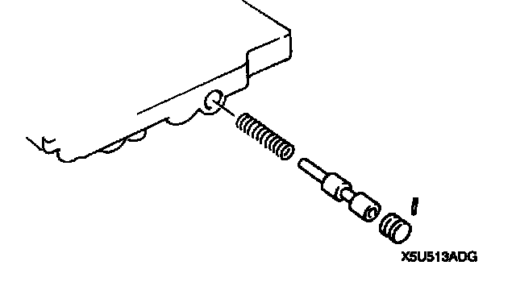
7. Install the reverse brake sequence valve spring, clutch sequence valve, 3 - 2 kickdown control valve plug, and needle roller.
Lower Valve Body Disassembly / Assembly
Caution: Denting or scratching these precisely machined components will reduce the ability of the transmission to shift properly. When handling these components or the valve body that contains them, be careful not to drop or hit them.
Note: If a valve does not slide out under its own weight, place the valve body open side down and tap on the valve body lightly with a plastic hammer.
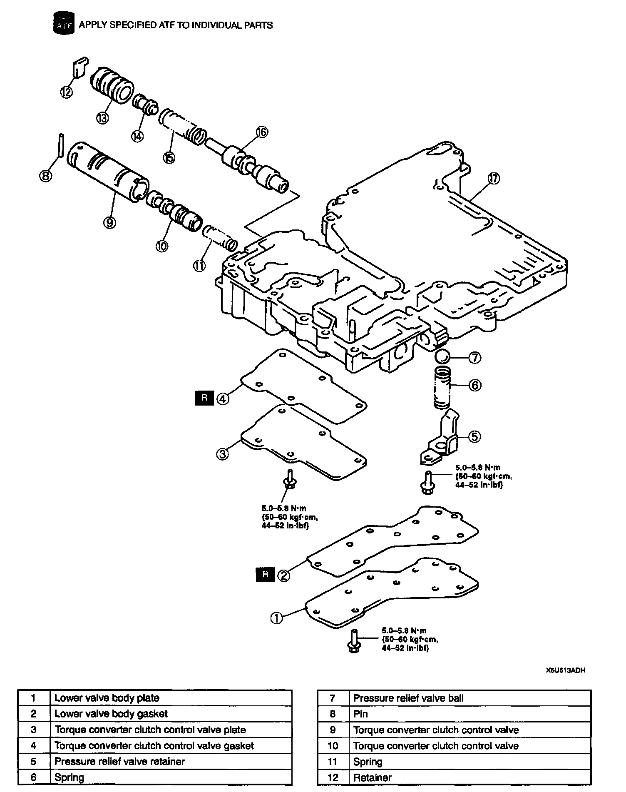
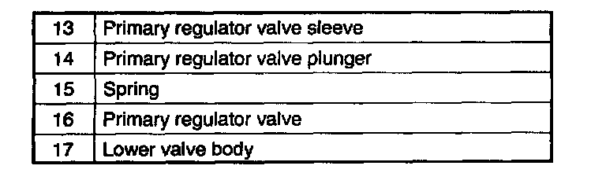
1. Disassemble in the order shown in the figure, noting the proper reassembly direction of the valves and internal parts.
Warning: Using compressed air can cause dirt and other particles to fly out, causing Injury to the eyes. Wear protective eye wear whenever using compressed air.
2. Clean all parts and bores with compressed air and apply ATF to them immediately before assembly.
3. Assemble in the reverse order of disassembly.
Assembly Procedure
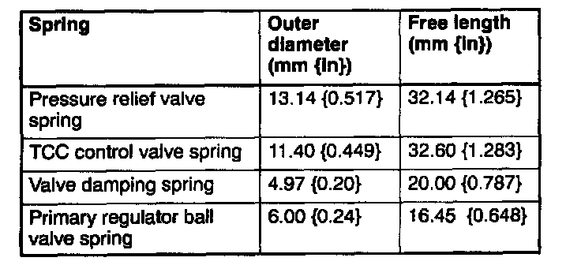
1. Measure the spring free length.
2. If not within the specifications, replace the control valve body component.
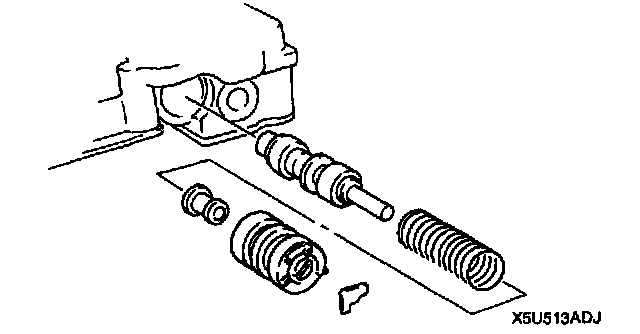
3. Install the primary regulator valve, spring, primary regulator valve plunger, primary regulator valve sleeve, and retainer.
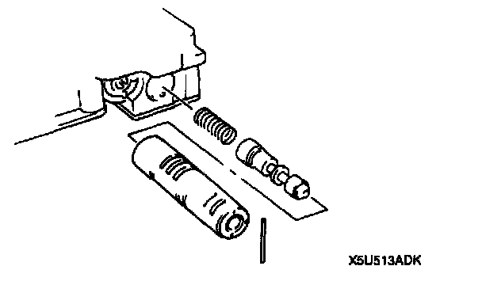
4. Install the spring, torque converter clutch control valve, torque converter clutch valve sleeve, and pin.
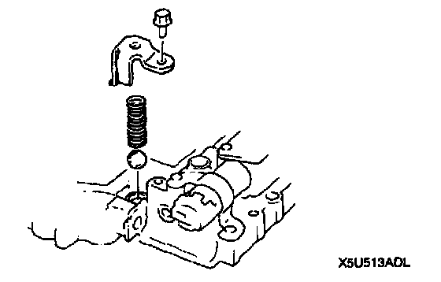
5. Install the pressure relief valve ball, spring, pressure relief valve retainer.
6. Tighten the bolt
Tightening torque 5.0 - 5.8 Nm (50 - 60 kgf-cm, 44 - 52 inch lbs.)
7. Install the new gasket and lower valve body plate and tighten the bolts.
Tighten torque 5.0 - 5.8 Nm (5O - 60 kgf-cm, 44 - 52 inch lbs.)
8. Install the new gasket and torque converter clutch control valve plate and tighten the bolts.
Tighten torque 5.0 - 5.8 Nm (50 - 60 kgf-cm, 44 - 52 inch lbs.)
Control Valve Body Assembly
1. Verify that all parts are clean and free of dust and other small particles.
2. Apply ATF to all parts.
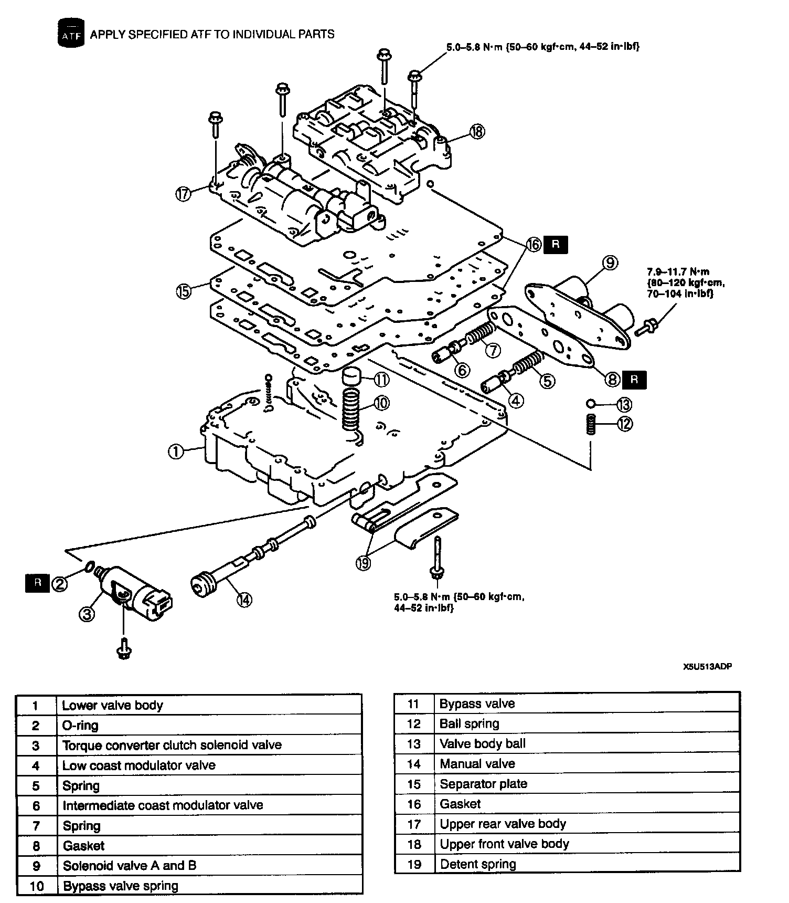
3. Assemble in the reverse order.
Assembly Procedure
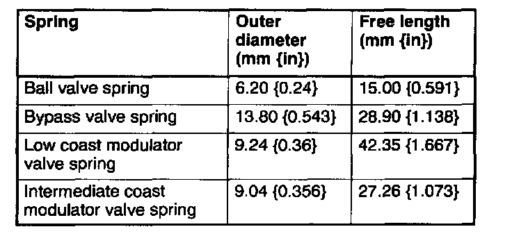
1. Measure the spring free length.
2. If not within the specification, replace the control valve body component.
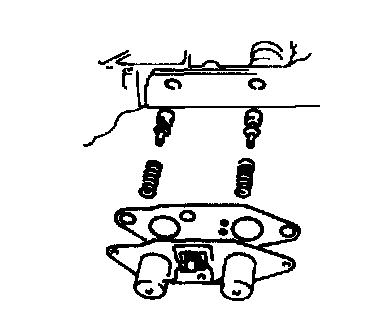
3. Install the low coast modulator valve, spring, intermediate coast modulator valve, spring, new gasket, shift solenoid A, and B.
4. Tighten the bolts.
Tighten torque 7.9 - 11.7 Nm (80 - 120 kgf-cm, 70 - 104 inch lbs.)
5. Apply ATF to the new O-ring.
6. Install the O-ring to the TCC solenoid valve.
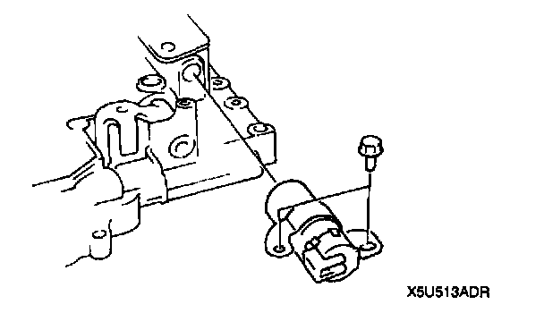
7. Install the TCC solenoid valve to the lower valve body
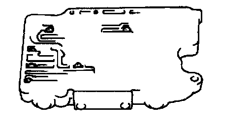
8. Install the valve body balls to the upper rear valve body.
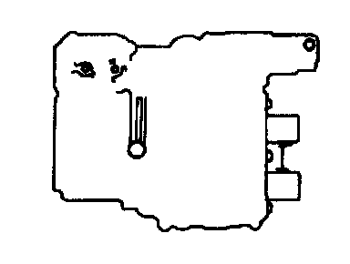
9. Install the valve body ball, inspect ball, and bypass valve, to the lower valve body.
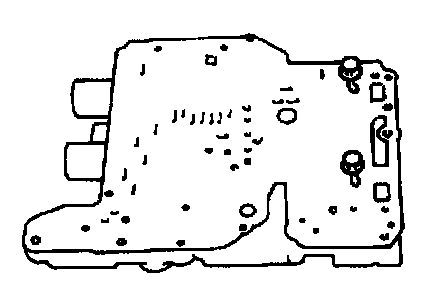
10. Place separator plate and new lower valve body gasket on lower valve body component and tighten installation section of front upper valve body component with 2 bolts temporarily.
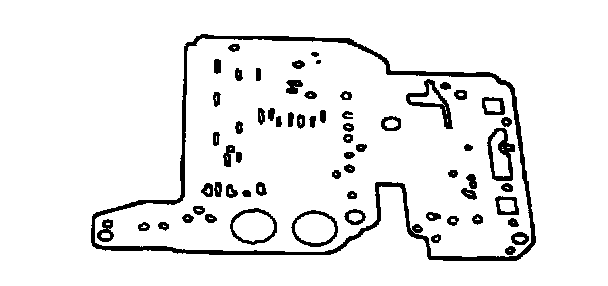
11. Place new upper valve body gasket on lower valve body component.
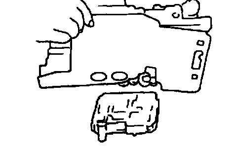
12. While holding upper valve body gasket and lower valve body component together, install it on rear upper valve body component.
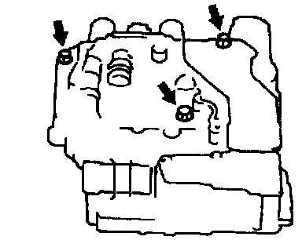
13. Tighten 3 bolts indicated in figure at the left temporarily.
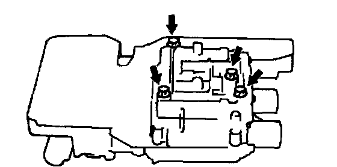
14. Turn over lower valve body component and tighten 4 bolts indicated in figure at the left temporarily.
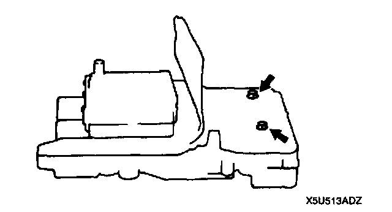
15. Remove the 2 bolts tightened temporarily in step 5.

16. Install lower valve body component on front upper valve body.
17. Tighten 3 bolts indicated in figure at the left temporarily.
18. Turn over lower valve body and tighten 5 bolts indicated in figure at the left temporarily.
19. Tighten bolts on upper valve body side to specified torque.
Tightening torque 5.0 - 5.8 Nm (50 - 60 kgf-cm, 44 - 52 inch lbs.)
20. Tighten bolts on lower valve body inside to specified torque.
Tightening torque 5.0 - 5.8 Nm (50 - 60 kgf-cm, 44-52 inch lbs.)
21. After installing manual valve, install detent spring and plate and tighten detent spring bolt to specified torque.
Tightening torque 5.0 - 5.8 Nm (50 - 60 kgf-cm, 44 - 52 inch lbs.)